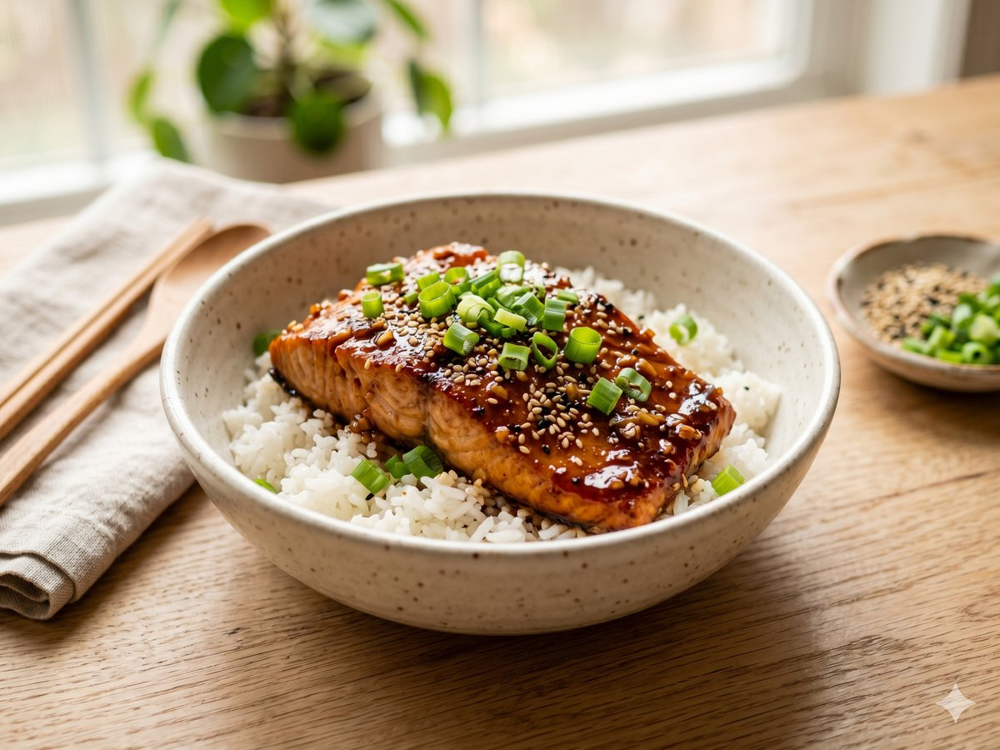

Honey Garlic Salmon Bowls
Sticky-sweet salmon over rice — a fast dinner that tastes like takeout.
25 min · Serves 4 · Mise Kitchen

Ingredients
- 4 salmon fillets
- 3 tablespoons honey
- 3 tablespoons soy sauce
- 3 cloves garlic, minced
- 1 tablespoon rice vinegar
- 2 cups cooked rice
- 2 green onions, sliced
- 1 teaspoon sesame seeds
Directions
- Whisk the honey, soy sauce, garlic, and vinegar together.
- Sear the salmon in a hot pan, skin-side down, for 4 minutes, then flip.
- Pour in the sauce and spoon it over the salmon until glazed, about 3 minutes.
- Serve over rice and top with green onions and sesame seeds.
An original recipe from Mise Kitchen. Free to save and cook.